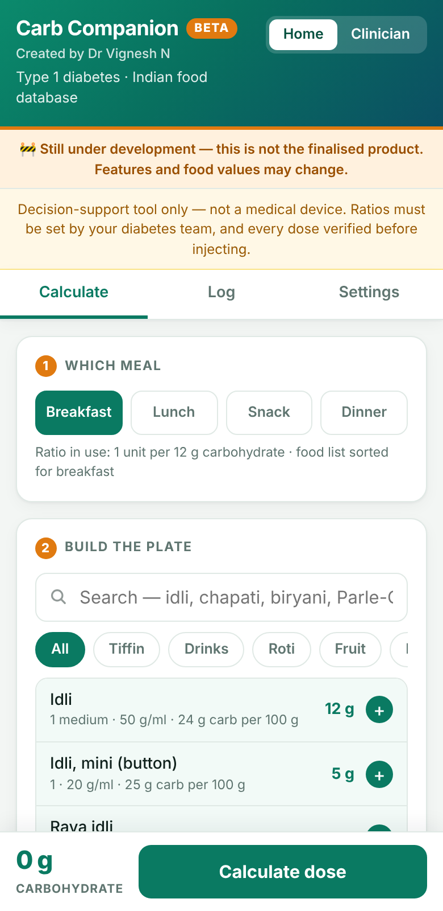
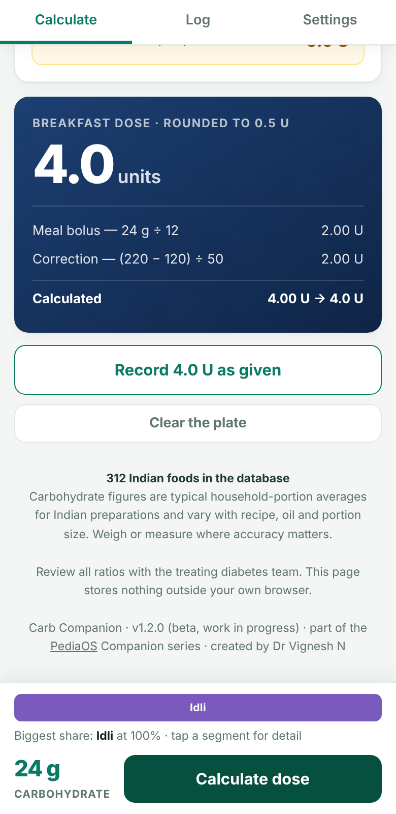
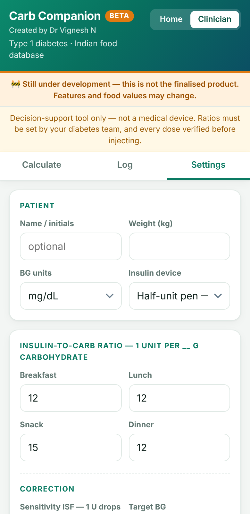

Carb Companion
Build the plate from over 300 Indian foods in household measures — katori, piece, glass — and get the mealtime insulin dose from the ratios set by the child’s diabetes team.
Still under development — this is a beta, not the finalised product. Features and food values may change.



What it does
312 Indian foods
Rice dishes, rotis, tiffin, dal, sabzi, street food, sweets, drinks, fruit and packaged snacks, in the portions families actually serve.
Sorted for the meal
Pick breakfast, lunch, snack or dinner and the list puts the most likely foods first — idli and dosa at breakfast, rice and roti at lunch.
Dose with the working shown
Meal bolus from the insulin-to-carb ratio, correction from the sensitivity factor and target, minus insulin still on board.
Safety limits
Hypo warnings, a maximum single dose, over-portion flags and exercise and CGM-trend adjustments.
Home and clinician modes
The diabetes team sets the ratios in clinician mode; families use the simpler home view.
Private by design
Works offline and installs to the home screen. Settings and the dose log stay on the device.
A decision-support aid, not a medical device. Ratios must be set by the treating diabetes team and every dose checked before injecting.